Fun Projects for your LEGO� MINDSTORMS� NXT!
|
|
Fun Projects for your LEGO� MINDSTORMS� NXT! |
| Voice Controlled Car |
|

1-11
Start by building the Castor Bot. Click the picture for building instructions.

|
|
12
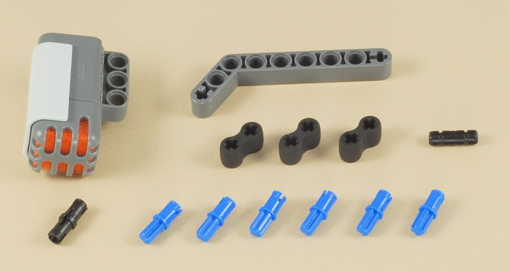
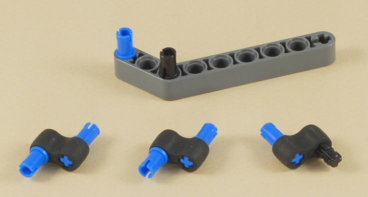
| The rubber pieces help isolate the sound sensor from the vibrations of the motors when the car is moving. |
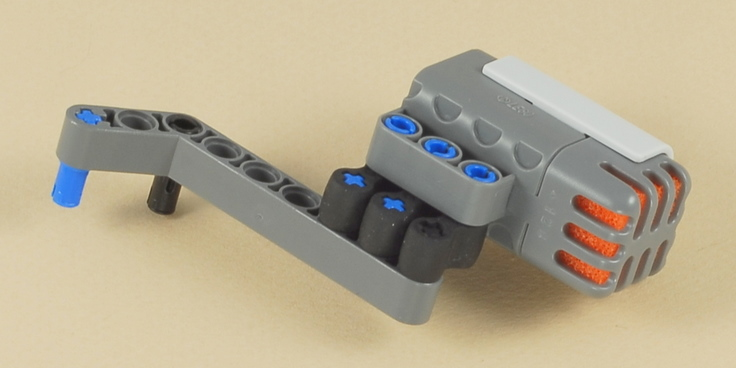
13
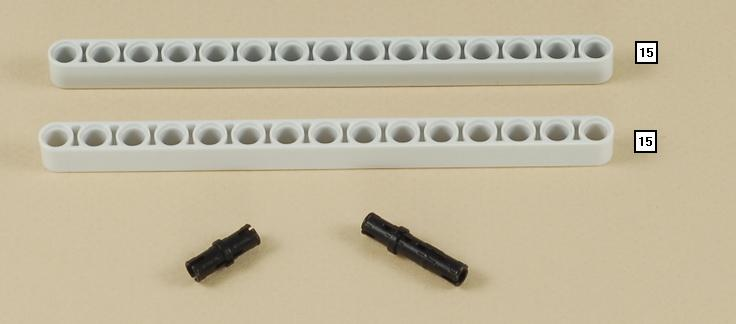
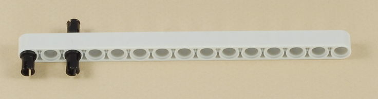
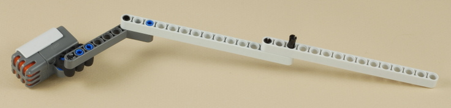
14
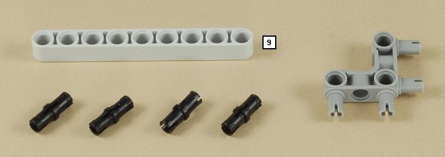
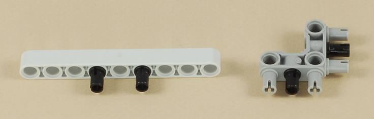
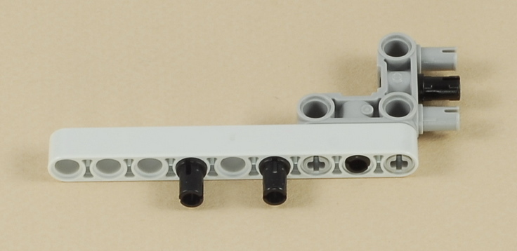
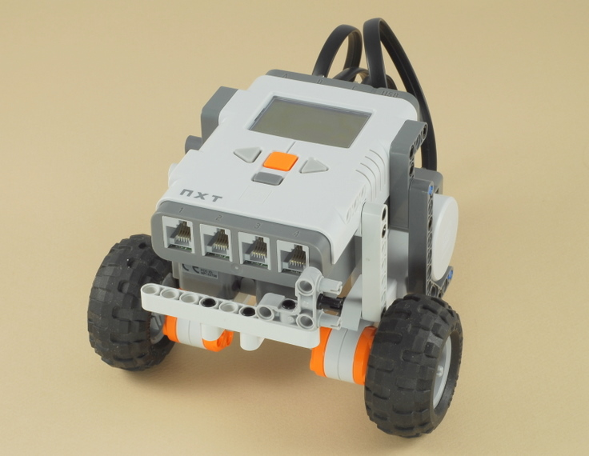
15
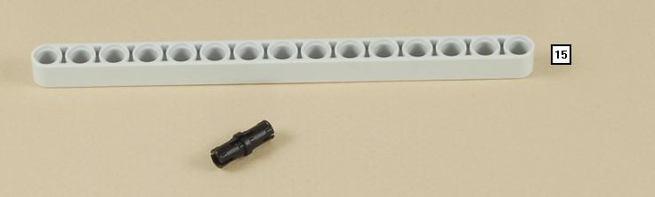
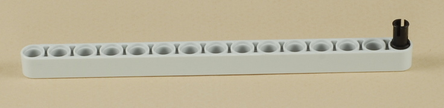
| The sound sensor is mounted on a tall tower to try to get away from the noise of the motors when the robot is moving. The NXT motors make a lot of noise. |
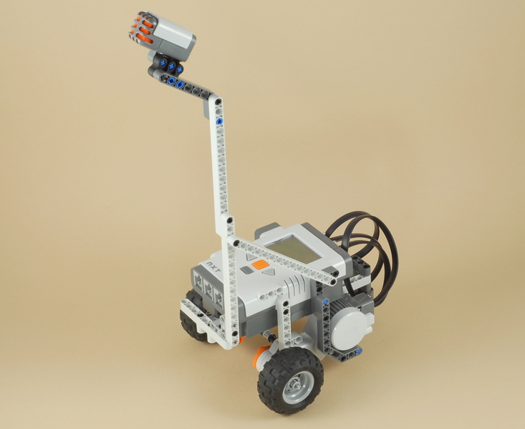
16
| Connect a wire from the sound sensor to port 2 on the NXT. |
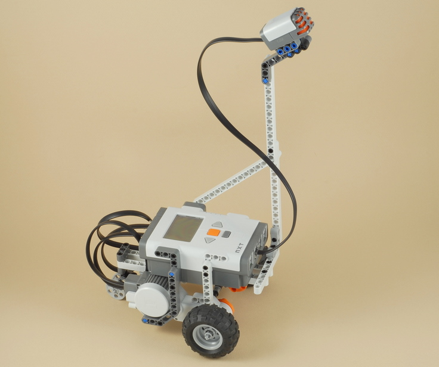
| Voice
Controlled Car Programming Use the program Voice Bot for the Voice Controlled Car. The program uses a couple of tricks to distinguish between the four voice commands that the robot can understand. Actually, real computer voice recognition programs use tricks too (just better and much more complicated), because no computer really understands what you are saying. It takes a little practice to learn how to say the words in the right way for it to work (see the instructions below), so the program also draws a graph of the sound that it hears on the NXT's display to help you practice saying the sounds right. |
Using the Voice Controlled Car
| The car is designed to drive on the floor with you
standing over and slightly behind it (the sound sensor is pointing
backwards), giving voice commands. However, you may want to
practice your voice commands while holding the robot in your hands
first. The NXT's sound sensor is very simple and is only capable of measuring the loudness of sound that it hears, so the Voice Bot program uses a few simple tricks based on the loudness and timing of your voice to determine what command you are saying. It will take a little practice to learn to say the commands properly, so the program helps out by drawing a graph of the "shape" and timing of your voice that it hears. Here is a description of how each command should
sound, along with a picture of what the graph might look like for that
sound on the NXT's display:
So, the four voice commands must be said something like this:
And remember that when the robot is moving forward you can only give the "Stop" command, and when the robot is stopped you can only give the "Go", "Turn Right", or "Turn Left" commands. Finally, you must pause for about a second between voice commands, to allow there to be some quiet between commands, so you can't yell "Turn Right" immediately after saying "Stop", for example. The key to getting the "Go", "Turn Right", and "Turn Left" commands right is the timing of the loudest part of the command. Note that the graph is divided into three parts by the two vertical lines, and the program will draw a tick mark along the horizontal line at the top of graph where the loudest part of the command was heard:
You can practice the timing of your commands with the robot held in your hands and speaking at a normal talking volume. Note that when you do this, the clattering of the wheels spinning in the air when the robot is "going" may cause a "Stop" command to be heard when you didn't say one. You can take the wheels off for practice if this is a problem. Then when the robot is on the floor and you are standing over it talking to it, you will need to talk louder for it to hear you well enough. Adjusting the Sound LevelsIf you are having trouble with the car stopping by itself before you say "Stop", or going or turning before you say anything, you may need to adjust some of the numbers used in the program, because currently the program does not have any "calibration" for the sound levels, and some sound sensors are more sensitive than others (and some rooms are more noisy than others). The first three blocks in the Voice Bot program set three variables to numbers that are the sound levels required for the various commands to work: 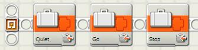 You can change one of these sound levels by selecting the block and changing the "Value" for the variable. If the robot stops before you say "Stop", try increasing the value for the Stop variable. If the robot goes or turns before you say anything, try increasing the value for the Go variable. If your room is very noisy and the robot doesn't seem to listen to anything after hearing one command, you could try increasing the Quiet variable. |
Challenges
|
|
Copyright
�
2007-2009 by Dave Parker. All rights reserved. |